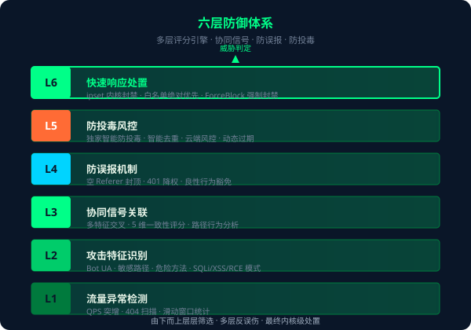

重要说明
WardenNet 专注于 Web 应用层（L7）威胁检测与 IP 封禁，不提供网络层（L3/L4）带宽防护。SYN/UDP 洪水、带宽耗尽型 DDoS 攻击仍需依赖云厂商硬件清洗或高防 IP。
让每一台服务器都成为哨兵。开源 Agent + 闭源云端 SaaS 混合模式，6 层防御体系 + 5 维评分引擎，为 Web 应用提供精准、轻量、协同的安全防护。
开源 Agent + 闭源云端 SaaS，混合模式兼顾安全与协同
边缘节点完全开源（AGPLv3），Go 单二进制部署，零运行时依赖，单机永久免费可用。代码透明可审计，无隐藏后门风险。
云端协同服务，多节点交叉验证、威胁情报聚合、租户隔离治理。闭源保障防御策略安全，订阅模式按需付费。
Agent 单机可用，Cloud 协同增强。断网自动降级为单机模式，恢复后自动同步。本地实时 + 云端聚合，双重防御。
"一处发现，全网御敌"
传统安全方案各自为战，攻击者只需单点突破即可横行内网。WardenNet 通过协同防御网络，让每一台服务器既是独立哨兵，也是联动节点。当任意一台 Agent 发现可疑流量，威胁信号会实时广播至全网，所有节点同步提升警戒阈值。
我们相信，真正有效的防护不应依赖单点硬件的性能极限，而应依靠分布式节点的集体智慧。协同防御让小节点也能汇聚成钢铁长城，让攻击者无处藏身。
边缘 Agent + 云端协同，混合架构全链路防护

从流量统计到自动封禁，层层递进，精准识别

实时监控 QPS 突增、404 扫描频次，滑动窗口统计多维度流量特征，快速捕获异常趋势。
Bot UA 黑名单、敏感路径探测、危险 HTTP 方法识别，SQLi/XSS/RCE 经典 Payload 模式匹配。
多特征交叉验证，5 维一致性评分模型，路径行为聚类分析，从单点异常到群体模式识别。
空 Referer 封顶策略、401 响应降权处理、良性爬虫行为豁免，多层反误伤保障业务连续性。
独家智能防投毒算法、智能去重机制、云端风控隔离、动态过期机制。
内核级 ipset 封禁、白名单绝对优先覆盖、ForceBlock 强制封禁模式，毫秒级执行处置动作。
5 维一致性评分 + 决策引擎，让威胁识别从经验走向量化
扫描行为往往遵循目录树前缀，计算请求路径前缀的一致性，识别批量探测模式。
衡量 IP 在窗口内新增路径的饱和程度，正常用户行为有局限，扫描器倾向全量覆盖。
统计目标路径的分布熵值，攻击者常集中攻击敏感点，正常用户访问更分散。
扫描器往往产生大量 404/403，正常用户响应码更丰富。计算响应码分布的均匀度。
分析 HTTP 方法使用模式，探测型 IP 倾向 HEAD/GET 组合，攻击型 IP 会出现异常方法。
智能多信号融合决策引擎
云端情报 + 本地行为 + 检测器评分
动态权重、智能分级处置综合评分融合云端协同信号、本地行为分析和检测器特征，权重动态可调。智能分级处置——高置信度自动封禁，中等分数触发告警人工介入。
工程级实现，生产级可靠性
Go .so 动态插件机制，检测规则、评分模型、处置策略均可热插拔扩展，无需重新编译核心。
Global 全量 + Incremental 增量 + Tenant 租户隔离，多层同步策略兼顾时效性、可靠性和数据隔离。
所有 Agent-Cloud 通信基于加密签名认证，防篡改、防重放攻击，保障协同数据可信。
断网自动降级为单机模式继续防护，网络恢复后增量同步期间离线信号，实现真正的永不掉线。
明确能力边界，合规透明——我们承诺做到的，和不做的
以上攻击类型需要网络层防护方案，如 Cloudflare、阿里云高防 IP 等。